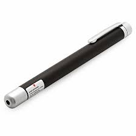

Laser Pen

-
Red laser pointers can be used in almost any indoor or low-light situation where pointing out details by hand may be inconvenient, such as in construction work or interior decorating.
-
Green laser pointers can be used for similar purposes as well as outdoors in daylight or for longer distances.
-
Laser Range Finding.
-
Bar Code Readers.
-
Buy laser here